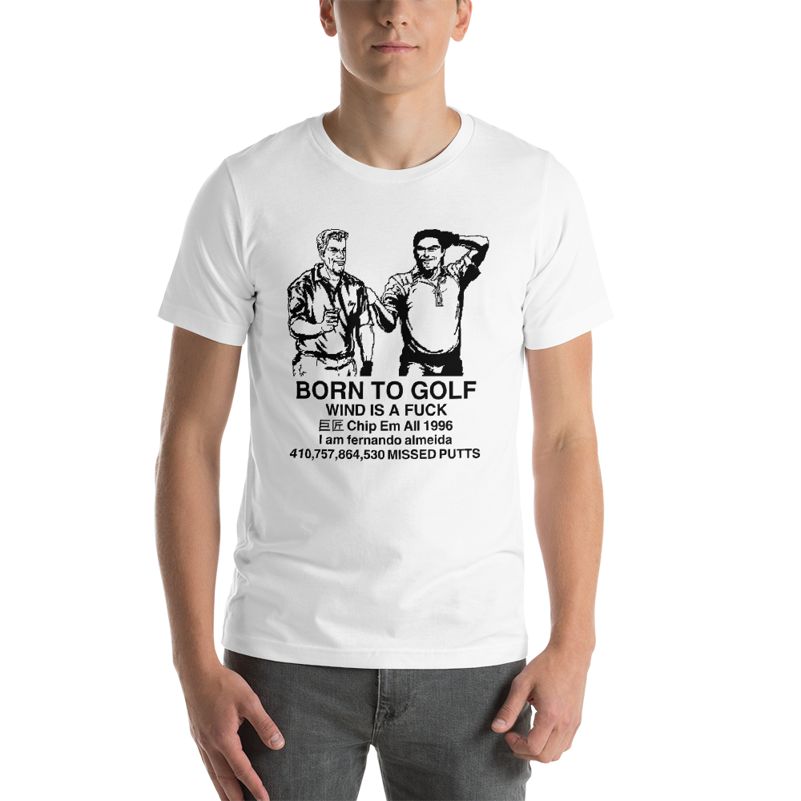

MUTE CITY was:
An experimental imprint making strange urban and FGC-themed DTG clothing,
and redirecting the majority of profits into local (Ottawa) charitable causes.
It was no longer financially viable, but it may return someday.
Should you want any of the clothing that was available, please email me directly.
In any case, thank you for all the support, especially Andrew.

